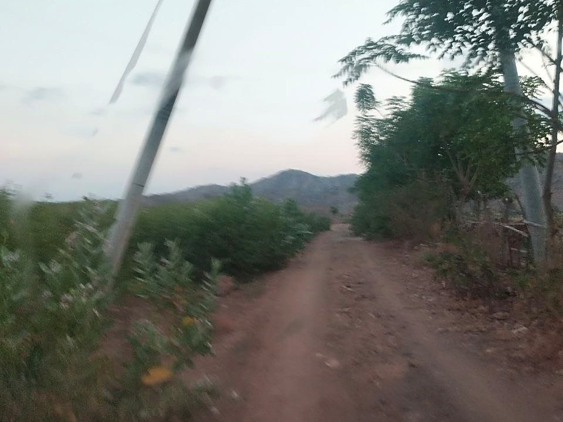

Dari jalan beraspal di Nagekeo, Gunung Ebulobo berdiri utuh di bawah langit biru: kerucut yang nyaris sempurna, hijau pekat dari kaki sampai bahu, dengan bidang batuan gundul membentang turun dari dekat puncaknya. Di bawah bayang gunung itu, sebuah kabupaten masih menghitung kerusakan.
From the paved road in Boawae District, Mount Ebulobo stands intact under a blue sky: a nearly perfect cone, deep green from foot to shoulder, with a bare rock face running down from just below its summit. Beneath the shadow of that mountain, a regency is still tallying the damage.
Gunung Ebulobo, yang oleh warga disebut Emburombu atau Puncak Nage Keo, adalah stratovolcano setinggi 2.124 meter di atas permukaan laut dengan puncak berupa kubah lava datar dan kawah selebar 250 meter bersisi terjal. Bentuknya sering disebut paling simetris di antara 14 gunung api di Flores. Catatan letusan sejak 1830 mencakup aliran lava yang kini dikenal sebagai Watu Keli, membentang sekitar empat kilometer di lereng utara, hingga letusan eksplosif di kawah puncak. Letusan terakhir yang terdokumentasi terjadi pada Februari 1969. Pendakian umumnya dimulai dari Boawae menuju Desa Mulakoli pada ketinggian sekitar 925 meter, dan di kaki gunung terdapat Kampung Adat Pajoreja.
Mount Ebulobo, known locally as Emburombu or the Nage Keo Peak, is a stratovolcano 2,124 metres above sea level with a flat lava dome summit and a 250 metre wide crater with steep walls. Its shape is often described as the most symmetrical among the 14 volcanoes of Flores. Eruption records dating back to 1830 include a lava flow now known as Watu Keli, stretching about four kilometres down the northern slope, as well as explosive eruptions at the summit crater. Its last documented eruption occurred in February 1969. Climbs usually begin from Boawae towards Mulakoli Village at around 925 metres, and at the foot of the mountain lies the traditional village of Pajoreja.
Gempa magnitudo 7,7 pada 15 Agustus 2026 pukul 04.58 WIB berpusat di laut, sekitar 30 kilometer timur laut Mbay, pada kedalaman 15 kilometer, dengan mekanisme sesar naik yang berkaitan dengan Flores Back-arc Thrust. Badan Geologi melaporkan guncangan itu memicu longsoran massa batuan di kawasan puncak dan kawah tiga gunung api di Flores: Ebulobo, Kelimutu, dan Anak Ranakah. Kepala Badan Geologi Lana Saria menyatakan longsoran tersebut merupakan dampak mekanis guncangan terhadap massa batuan yang memang sudah memiliki kestabilan rendah, bukan indikasi peningkatan aktivitas vulkanik. Hingga kini Ebulobo tetap berstatus Level I atau Normal. Dalam rapat koordinasi di Posko Utama Tanggap Darurat Nagekeo pada 9 September 2026, Pemerintah Provinsi Nusa Tenggara Timur mencatat dampak gempa di kabupaten itu: 20 orang meninggal dunia, 16.831 rumah terdampak, dan 710 fasilitas umum mengalami kerusakan.
The magnitude 7.7 earthquake on 15 August 2026 at 04.58 Western Indonesia Time was centred at sea, about 30 kilometres northeast of Mbay, at a depth of 15 kilometres, with a thrust fault mechanism linked to the Flores Back-arc Thrust. The Geological Agency reported that the shaking triggered rock mass slides at the summit and crater areas of three volcanoes in Flores: Ebulobo, Kelimutu and Anak Ranakah. Head of the Geological Agency Lana Saria stated the slides were a mechanical impact on rock masses that already had low stability, not an indication of increased volcanic activity. Ebulobo remains at Level I, or Normal. In a coordination meeting at the Nagekeo Emergency Response Main Post on 9 September 2026, the East Nusa Tenggara Provincial Government recorded the earthquake impact in the regency: 20 people dead, 16,831 houses affected, and 710 public facilities damaged.
Yang paling terasa berat justru di kampung-kampung yang letaknya paling jauh dari pusat layanan. Makipaket di Kelurahan Mbay II, Kecamatan Aesesa, hanya memiliki 15 rumah yang dihuni sekitar 235 jiwa dalam dua rukun tetangga. Akses menuju kampung itu masih berupa jalan tanah berdebu; pada April 2026 Kementerian Sosial menyampaikan rencana pembangunan jembatan gantung di wilayah tersebut, sementara listrik warga sebelumnya hadir lewat lampu tenaga surya yang dirakit warga sendiri bersama sebuah yayasan. Di jalan masuk kampung, sebuah tiang listrik sudah miring dan tinggal menunggu waktu. Bagi warga, gempa menambah satu lapis lagi pekerjaan yang harus diselesaikan: rumah yang harus diperbaiki, air yang harus dijangkau, dan akses yang belum juga selesai.
The heaviest burden falls on hamlets farthest from service centres. Makipaket in Mbay II Sub-district, Aesesa District, has only 15 houses inhabited by about 235 people in two neighbourhood units. The road into the hamlet is still dusty dirt; in April 2026 the Ministry of Social Affairs announced a plan to build a suspension bridge in the area, while electricity there previously came from solar lamps assembled by residents together with a foundation. On the road into the hamlet, a utility pole is already leaning and waiting for its time. For residents, the earthquake added one more layer of unfinished work: houses to repair, water to reach, and access that is yet to be completed.

Di wilayah inilah dua pengurus Pengurus Besar Federasi Mountaineering Indonesia menjalankan tugas kemanusiaan: dr. Putro Setyobudyo Muhammad, MBL, CIHL, Ketua Bidang Penelitian, Pengembangan, dan Inovasi PB FMI, dan Zulfahmi Ramli, Ketua Biro Hubungan Luar Negeri PB FMI. Penugasan mereka memuat pelayanan kesehatan warga, termasuk pemeriksaan kesehatan di lokasi-lokasi yang paling sulit dijangkau di Kabupaten Nagekeo.
It is in this area that two board members of the Indonesian Mountaineering Federation (FMI) are carrying out a humanitarian assignment: dr. Putro Setyobudyo Muhammad, MBL, CIHL, Head of the Research, Development and Innovation Division of the FMI Central Board, and Zulfahmi Ramli, Head of the Foreign Relations Bureau of the FMI Central Board. Their assignment includes health services for residents, including health checks at the hardest to reach locations in Nagekeo Regency.
Kabar lain menyusul dari Nagekeo: pengurus FMI Kabupaten Nagekeo akan diluncurkan dalam waktu dekat. Gunung yang tetap tenang itu kini bersiap menyaksikan babak baru organisasi mountaineering di kabupaten yang berdiri di lerengnya.
Another development is following from Nagekeo: the board of FMI Nagekeo Regency will be launched in the near future. The mountain that has stayed calm is now preparing to witness a new chapter for the mountaineering organisation in the regency that stands on its slopes.